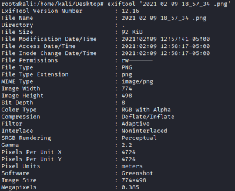

metadata
ExifToolinstall:
sudo apt install libimage-exiftool-perl
use
SteghideHo usato steghide un programma di steganografia
steghide extract -sf hihihihihi.jpg
cat hint
Automatically extract known file types.
-M: Recursively scan extracted files.